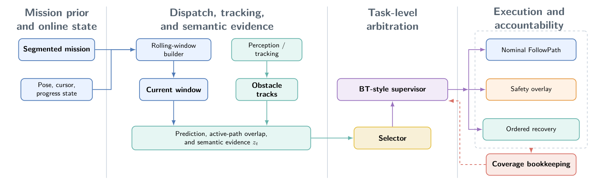
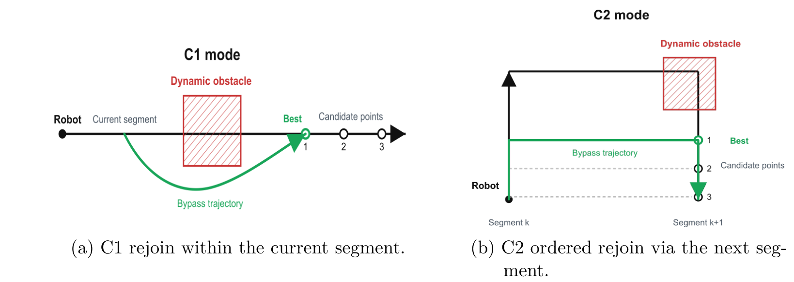
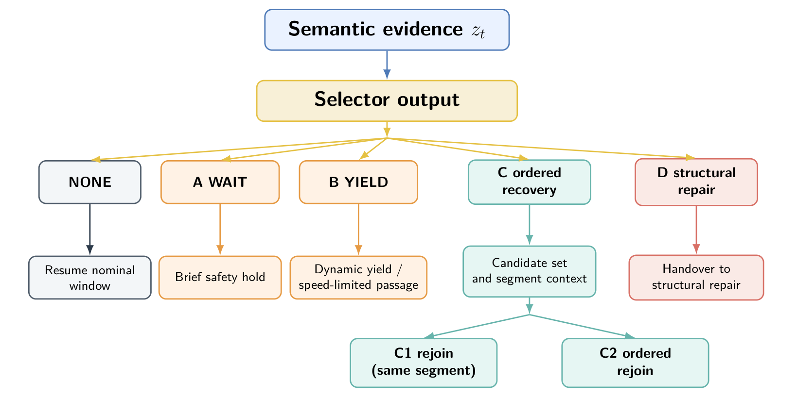
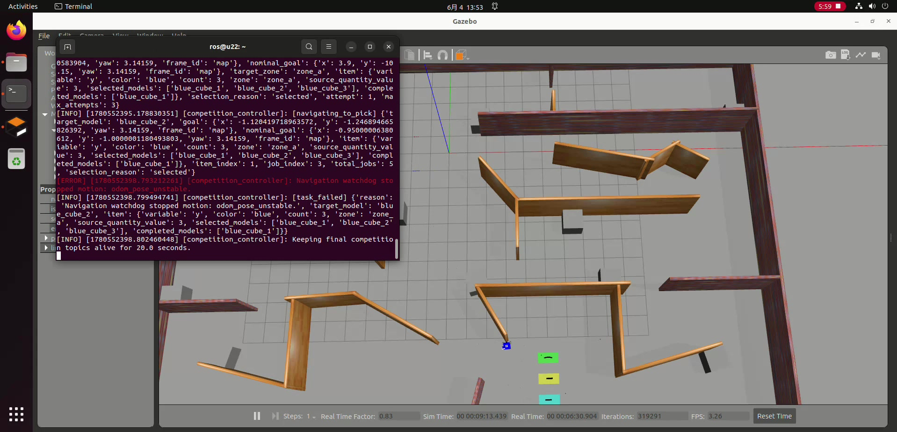

ROS 2 在线覆盖导航与任务决策
基于硕士论文，研究动态环境中的在线覆盖导航，以分层任务监督协调等待、让行、局部重接与区域结构修复，并维护剩余任务记录。机械臂运动学交互与移动操作仿真作为扩展展示。
动态干扰下的任务监督与恢复
展示各恢复模式的触发条件、执行接口与任务记录。
基于滚动路径窗口衔接覆盖计划与 Nav2 执行，通过任务监督组织等待、让行、有序重接和结构修复，并维护剩余区域记录。
图为论文逻辑的交互解释，不是实时 BT tick 日志。D1 与 D2 根据准入条件选择，页面的上下关系不表示固定尝试顺序。
论文系统架构与原图 按需展开

查看论文中的重接方式与反应层次原图


硕士论文：Design and simulation of an online coverage path planning algorithm for a single robot using ROS 2 and Gazebo。实验原图与统计口径见材料索引；本次未重新运行论文实验。
六轴机械臂运动学交互
支持视角调整、关节参数设置、预设姿态及动作序列回放。
根据源码重建的运动学演示；播放编排与附着提示用于说明动作，不代表 Gazebo 的实时反馈。
Gazebo 仿真运行记录
完整运行录像约 6 分 24 秒，包含任务状态与异常终止记录。
全景中机械臂较小；关节结构和预设动作可在“机械臂交互”标签中的模型中检查。点击章节会跳转并暂停，按播放键观看。
工程观察：末段的导航保护停止
导航中止与异常分析
约 5:59，终端出现 Navigation watchdog stopped motion: odom_pose_unstable 和 task_failed。这说明该次运行在里程计位姿稳定性检查处终止，需要把导航状态与任务状态一起分析。
录像末尾关闭进程时还出现 rclpy InvalidHandle。它与前面的导航看门狗中止处于不同阶段，不应混为一个原因。
这段录像可展示运行过程及失败分析；全景画面与状态日志不足以独立验证每个关节动作、物理夹持或整任务成功。

移动操作场景与任务流程
展示源码场景、对象坐标及导航—抓取—放置任务流程。
ROS 2 通信接口与导航配置 按需展开
导航：搬运工程通过 NavigateToPose 执行目标，使用 AMCL、NavFn Dijkstra 与 DWB；论文在线覆盖的 FollowPath 与 MPPI / RPP 配置另行说明。
抓放：FollowJointTrajectory 发送预设关节目标，ATTACHLINK / DETACHLINK 请求仿真附着与释放；model_states 为物体位置核验提供真值。
任务核验：该源码会记录 final audit，但 all_truth_ok=false 尚未自动阻断成功状态，需要同时查看审计结果。
导航配置摘录 ↗